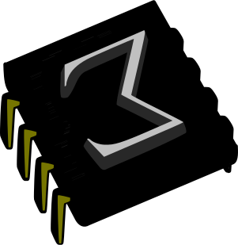

TeXmacs is an open source, fully fledged scientific editor, mostly developed by Joris van der Hoeven with the help of a few developers (including myself!) and a myriad contributors. Despite its name it isn't either a plugin for emacs nor a frontend to LaTeX. It defines a document format, features a macro language for extensions, innumerable plugins with embedded sessions, a vector graphics tool, scientific spreadsheets, bibliography management, remote sessions and a long, long list of features. On top of all that TeXmacs provides god-like powers over your documents thanks to the Scheme language. Try it and never look back!
Most of my contributions took place from 2011 to 2014. I was interested in several subprojects, including the Qt port, using TeXmacs as an IDE for itself, bibliography management, automatic updates, automatically generating documentation, the printing interface... There should be a complete list in my page at texmacs.org. Sadly, as of 2016 my involvement with TeXmacs has declined, although I still use it for daily work.